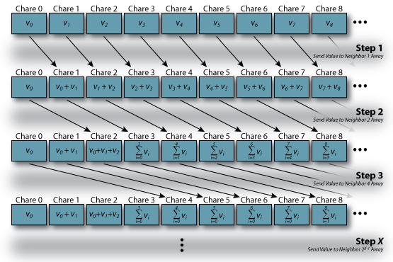

Parallel Prefix Program
The Prefix Calculation
// Assumed variable declarations for both methods
|
| Figure 2: C++ Code for Prefix Calculation |

|
| Figure 1: Parallel Prefix Formula |
It is often useful to perform an operation on an array of values where each value is the sum of all the array elements before it. For example, consider an array V of length N with values { v0, v1, v2, v3, ... , vN-1 }. We would like to calculate another array V' (also of length N) with the values { v0, v0+v1, v0+v1+v2, v0+v1+v2+v3, ... }. The equation to the right (in Figure 1) shows the resulting value for the kth element where v'x represents the xth element in the V' array and vy represents the yth element in the V array.
To make the above a bit more concrete, below is an example set of arrays. The V array
is the input array. The V' array is the output array (result of the calculation.
| V | = { | 3, | 4, | 1, | 0, | 3, | 2, | 8 | } |
| V' | = { | 3, | 7, | 8, | 8, | 11, | 13, | 21 | } |
There are multiple ways in which the code for the prefix calculation can be written. Figure 2 shows two methods of writing the prefix calculation in serial C++ code. The first method is slower but can be parallelized. The second method is faster (does less overall work) but cannot be parallelized because of data dependencies. The number of operations (in this case, additions) that need to be performed in the first method is O(N 2). If the value of N is low, doing this calculation in serial is not a big deal and will not take long. However, as N increases, the number of operations that need to be performed increases as a function of N 2. The second method, which makes the observation that the previous v_prime[] value can be used to avoid duplicating calculations, takes O(N) operations. This is a great improvement over the first method and will run substantially faster for large values of N. However, it is not as easy to parallelize the second method. Each iteration of the loop depends on the value calculated in the previous iteration creating a chain of data dependencies over the course of the entire calculation. In the first method, each iteration of the outer-loop is independent of any other iteration of the outer-loop (they write to different elements of v_prime[] and only read from v[]) and therefor could be executed in parallel. However, the last outer-loop iteration will perform N operations (N iterations of the inner-loop) and therefor, if each outer-loop iteration were executed on a different processor in parallel, at least one of the processors will take O(N) time to complete its iteration of the outer-loop.
How to perform this calculation in parallel may not be immediately evident. Before continuing with this example, the reader is encouraged to take a few minutes to think about various ways in which this calculation could be parallelized. There are multiple ways in which this calculation can be parallelized and only a single method is outlined below.
A Parallel Version of the Prefix Calculation
{kind=link}
|  |
| Figure 3: Overview of Parallel Prefix Calculation |
Since we are writing this program using Charm++, will setup the parallel version of this calculation without a worrying about how many processors there are. Instead, we will write the application in terms of chare objects and the length of the array over which the prefix calculation should be performed. To keep things simple at first, we will create an array of chare objects where each chare object in the array only contains a single value of the array of values. Initially, each chare object will contain only its corresponding value from the array of values. That is, the chare object at index k in the chare array will hold value vk. This is shown visually in the first row in Figure 3 and represents the initial condition of the chare array. Note that the first chare object (index 0) has the correct final result.
First, let start by describing the first step of the calculation. In the first step of the calculation, each chare object in the chare array will simply send a message to its neighbor to the right (i.e. send to thisIndex + 1). The last chare object in the chare array, since it has no neighbor to the right, will not send a message. The sending chare object will place its value into the message. The receiving chare, once it receives this message, will add the contained value to it's own. The resulting state of the chare array is shown in Figure 3 as the second row. Each chare object (except for the first at index 0) will now contain a value that is a sum of two values from the original array (V). Once this step has completed, the first and second chare objects (indexes 0 and 1) will have the correct final results.
The second step of the calculation is almost identical to the first. The only difference is that each chare object in the chare array will now send its value to the chare object that is two indexes higher than its own (second neighbor to the right). Because each value contained by a chare object is the sum of two values when this step begins, the result will be that each chare object will be the sum of four values (2 values sent to it + the two it contains). Once this step has completed, the first four chare objects (indexes 0 through 3) will have the correct final results.
This process continues until all chare objects have correct final results. For a given step X, each chare object will send a message to the chare object at thisIndex + 2X-1. After step X has completed, the first 2X chare objects in the chare array will have correct final results. If we set 2X = N, we can conclude that ⌈ log2(N) ⌉ overall steps in the calculation will be needed. If we assume that each chare object is on a different processor, the overall calculation will take O(log2(N)) time. Note: If we assume that communication costs are small and constant, then this parallel version of prefix is faster than either of the serial methods described above for large values of N.
Implement It
Try implementing the parallel prefix calculation in Charm++. To get you started, here are some hints that you might find useful:
- Makefile: The Makefile for this application should be very similar to the makefiles used in the Array and Broadcast versions of the "Hello World" examples.
- Initial Values: Create a chare array and have each chare object assign iself a random number in its constructor.
- Data Dependencies: The most straight forward method of ensuring data dependencies are met is to create a barrier between the steps. That is, tell each chare object in the array of chare objects to perform a single step of the calculation (e.g. PrefixChareClass::doStep(int stepNum) which will send a message to its neighbor at I = thisIndex + (1 << stepNum) assuming stepNum is zero-based OR, if I <= N, then it directly checks in with the main chare). Once, the receiving chare object in the chare array receives and adds the other chare object's value, have it check in with the main chare. Once the main chare has received N check in messages, it can start the next step (or terminate if O(log2(N)) steps have been completed). Alternatively, you can skip ahead in the tutorial a little bit and read about reductions. However, a barrier is not needed (see No Need for Barriers in the Extensions below).
-
Checking Correctness: The methods used to sayHi() in both the
Array and Broadcast
versions of the "Hello World" example can be used to display the values before and after the
prefix calculation to verify correctness. Using a small value of N, have each chare object
display its value before the prefix calculation with an output similar to
"Before: Value[%d] = %lf". After the prefix calculation, have each chare object display its
value with an output similar to "After: Value[%d] = %lf". When you run the program, redirect
the output to a file, say out.txt and then look at the file using sort (i.e.
sort out.txt | less). Regardless of the order in which the CkPrintf()s occur to standard
output, this will allow you to view the array contents in the proper order. Once it is working
for smaller values of N, try larger values.
Example sorted Output (N=3): After: Value[0] = 1 After: Value[1] = 6 After: Value[2] = 8 Before: Value[0] = 1 Before: Value[1] = 5 Before: Value[2] = 2
Solution
{kind=link}

|
| Figure 4: Control Flow for Parallel Prefix Solution |
A simple solution for the parallel prefix calculation can be found here (ParallelPrefix.tar.gz). Figure 4 shows the overall control flow of the solution.
Extensions / Performance Considerations
Multiple Values per Chare Object
With only a single value being processes each to a message is sent/received, the overhead of performing communication will be much greater than the cost of performing the actual computation. Modify the program so that each chare object hold a portion of the V array (i.e. several consecutive values instead of just a single value). This way, each time a chare object receives a message, it will preform many operations instead of just a single operation.
No Need for Barriers
Without the barrier between steps, there is the possibility of a data race to occur and cause your program to produce incorrect results. Take another look at Figure 3 above. Lets assume that each chare object keeps a counter (stepCounter) which indicates which step that chare object is currently in. Further assume that the entry method which receives values for a chare object (receiveValue()) only takes a single parameter (the value that is being passed). In response to receiving the value, this entry methods adds the incoming value to its own value, passes the sum onto the next chare object, and then increments the step counter which moves this chare object into the next step. With barriers, this would be fine. However, without the barriers ensuring that all the chare objects are working on the same step at any given moment, bad things can happen. The steps are illustrated below. Starting at initial conditions and assuming that each chare object is on a different processor, a possible race condition is as follows (remember, assuming no barriers between steps):
-
Initially:
State:
Chare 0 : stepCounter = 0, value = v0
Chare 1 : stepCounter = 0, value = v1
Chare 2 : stepCounter = 0, value = v2
Chare 3 : stepCounter = 0, value = v3
Messages In-Flight:
none
-
First: All chare objects send their messages for step 1.
State:
Chare 0 : stepCounter = 1, value = v0
Chare 1 : stepCounter = 1, value = v1
Chare 2 : stepCounter = 1, value = v2
Chare 3 : stepCounter = 1, value = v3
Messages In-Flight:
Chare 0 -> Chare 1 : value = v0
Chare 1 -> Chare 2 : value = v1
Chare 2 -> Chare 3 : value = v2
Chare 3 -> Chare 4 : value = v3
-
Second: Chare 1 receives it's message from Chare 0. receiveValue() is executed
for Chare 1 (the incoming value is added, the sum is passed to Chare 3, and Chare 1's
stepCounter is incremented).
State:
Chare 0 : stepCounter = 1, value = v0
Chare 1 : stepCounter = 2, value = v0+v1
Chare 2 : stepCounter = 1, value = v2
Chare 3 : stepCounter = 1, value = v3
Messages In-Flight:
Chare 1 -> Chare 2 : value = v1
Chare 2 -> Chare 3 : value = v2
Chare 3 -> Chare 4 : value = v3
Chare 1 -> Chare 3 : value = v0+v1
-
Third: Chare 3 receives the message from Chare 1 before it receives the message
from Chare 2.
State:
Chare 0 : stepCounter = 1, value = v0
Chare 1 : stepCounter = 2, value = v0+v1
Chare 2 : stepCounter = 1, value = v2
Chare 3 : stepCounter = 2, value = v0+v1+v3 !!! INCORRECT !!!
Messages In-Flight:
Chare 1 -> Chare 2 : value = v1
Chare 2 -> Chare 3 : value = v2
Chare 3 -> Chare 4 : value = v3
Chare 3 -> Chare 5 : value = v0+v1+v3 !!! INCORRECT !!!
The problem is cause by the fact that messages are not guaranteed to be delivered in the order in which they arrived. If Chare 0, Chare 1, Chare 2, and Chare 3 are on different processors and the processor that Chare 2 is located on is slow for some reason (operating system swapped out the process, for example) and falls a little behind, then the above sequence of events could easily occur. The barrier would have prevented the chare objects from being in different steps of the computation, but without it, race conditions can occur as some chare objects get ahead of other chare objects (for whatever reason).
As a useful exercise, try extending this program to not use barriers. Instead, modify the receiveValue() entry methods so it takes two parameters: stepFrom and value. The value parameter is the same as before. The stepFrom parameter indicates in which step the message was sent (from the point-of-view of the sending chare object; alternatively, the index of the sending chare object could be used). Since each chare object is in a particular step at any given moment, when it receives a message, it can check the stepFrom value to see if the message has arrived in-order. If not, it can resend the message to itself (which will cause the Charm++ Runtime System to re-queue the message). Alternatively, the receiving chare object could buffer the message and processes it later after the message it was expecting arrives (this would be prefered since resending-to-self could potentially occur several times and add significant overhead to the program, i.e. resend to self many times and thus execute the receiveValue() entry method many times before expected message arrives).
-
Initially:
State:
Chare 0 : stepCounter = 0, value = v0
Chare 1 : stepCounter = 0, value = v1
Chare 2 : stepCounter = 0, value = v2
Chare 3 : stepCounter = 0, value = v3
Messages In-Flight:
none
-
First: All chare objects send their messages for step 1.
State:
Chare 0 : stepCounter = 1, value = v0
Chare 1 : stepCounter = 1, value = v1
Chare 2 : stepCounter = 1, value = v2
Chare 3 : stepCounter = 1, value = v3
Messages In-Flight:
Chare 0 -> Chare 1 : fromStep = 1, value = v0
Chare 1 -> Chare 2 : fromStep = 1, value = v1
Chare 2 -> Chare 3 : fromStep = 1, value = v2
Chare 3 -> Chare 4 : fromStep = 1, value = v3
-
Second: Chare 1 receives it's message from Chare 0. receiveValue() is executed
for Chare 1 (the incoming value is added, the sum is passed to Chare 3, and Chare 1's
stepCounter is incremented).
State:
Chare 0 : stepCounter = 1, value = v0
Chare 1 : stepCounter = 2, value = v0+v1
Chare 2 : stepCounter = 1, value = v2
Chare 3 : stepCounter = 1, value = v3
Messages In-Flight:
Chare 1 -> Chare 2 : fromStep = 1, value = v1
Chare 2 -> Chare 3 : fromStep = 1, value = v2
Chare 3 -> Chare 4 : fromStep = 1, value = v3
Chare 1 -> Chare 3 : fromStep = 2, value = v0+v1
-
Third: Chare 3 receives the message from Chare 1 before it receives the message
from Chare 2. Chare 3 notices that this message is out of order (it was in step 1 and is
expecting a message with fromState = 1 but this message has fromState = 2).
State:
Chare 0 : stepCounter = 1, value = v0
Chare 1 : stepCounter = 2, value = v0+v1
Chare 2 : stepCounter = 1, value = v2
Chare 3 : stepCounter = 1, value = v3, buffered message(s) = { (fromStep = 2, value = v0+v1) }
Messages In-Flight:
Chare 1 -> Chare 2 : fromStep = 1, value = v1
Chare 2 -> Chare 3 : fromStep = 1, value = v2
Chare 3 -> Chare 4 : fromStep = 1, value = v3
-
Fourth: Chare 3 receives the message from Chare 2 and processes it since its
fromState value matches its own stepCounter value. Once it processes this
message, it checks to see if any buffered messages need processing also (i.e the next
fromState value). In this case, there is one, so it processes the buffered message
also (advancing Chare 3 through two steps).
State:
Chare 0 : stepCounter = 1, value = v0
Chare 1 : stepCounter = 2, value = v0+v1
Chare 2 : stepCounter = 1, value = v2
Chare 3 : stepCounter = 3, value = v0+v1+v2+v3
Messages In-Flight:
Chare 1 -> Chare 2 : fromStep = 1, value = v1
Chare 2 -> Chare 3 : fromStep = 1, value = v2
Chare 3 -> Chare 4 : fromStep = 1, value = v3
Chare 3 -> Chare 5 : fromStep = 2, value = v2+v3
Chare 3 -> Chare 7 : fromStep = 3, value = v0+v1+v2+v3
With this change in place (modification to chare array objects so they don't need to wait for a barrier), interaction with the main chare object is no longer needed during the prefix computation. Instead, each chare object in the array would only need to send a single message to the main chare object after its stepCounter has reached ⌈ log2(N) ⌉. This helps reduce the required amount of communication (assuming buffered messages, not re-sends). It also allows each chare object to proceed with computation based solely on data dependencies being met (i.e. it has the data it needs to move forward with its portion of the computation). With the barriers, all chare objects have to wait for the slowest chare object to complete the current step before they can move onto the next step even if they already have the data they need to continue. In simple example programs like this, this effect may not give a large speedup (in fact, the additional overhead compared to the tiny amount of work being done, a single addition, may even cause a slowdown), however, in actual applications, this can prove quite useful and give significant boosts to performance.
A modified version of the previous parallel prefix solution presented above can be found here (ParallelPrefix_NoBarrier.tar.gz). This version of the solution does not have implicit barriers while the prefix calculation itself is being preformed.